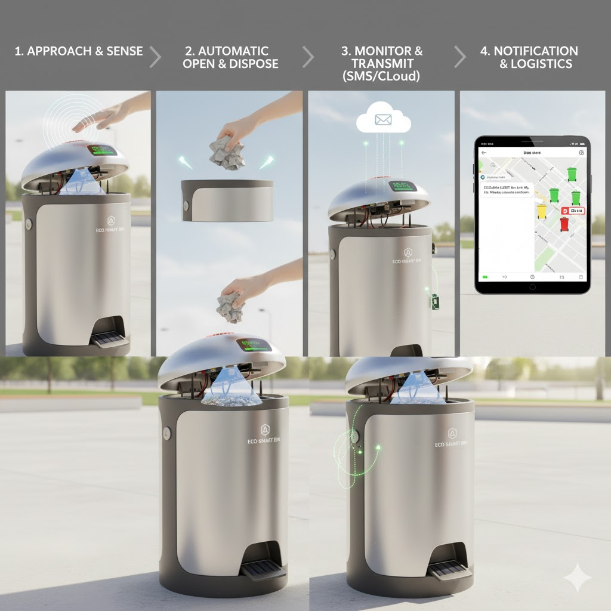
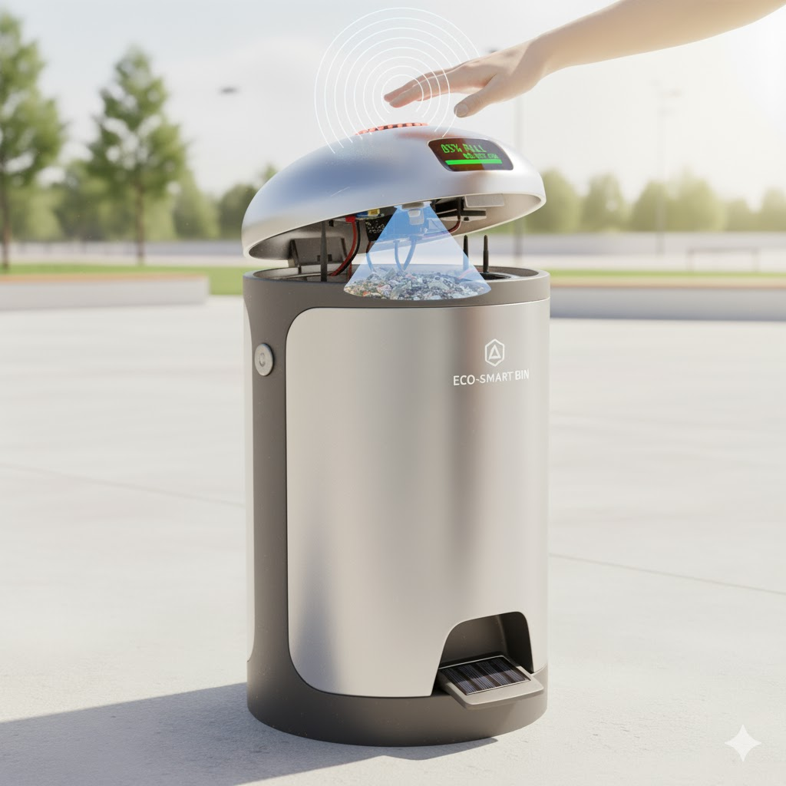
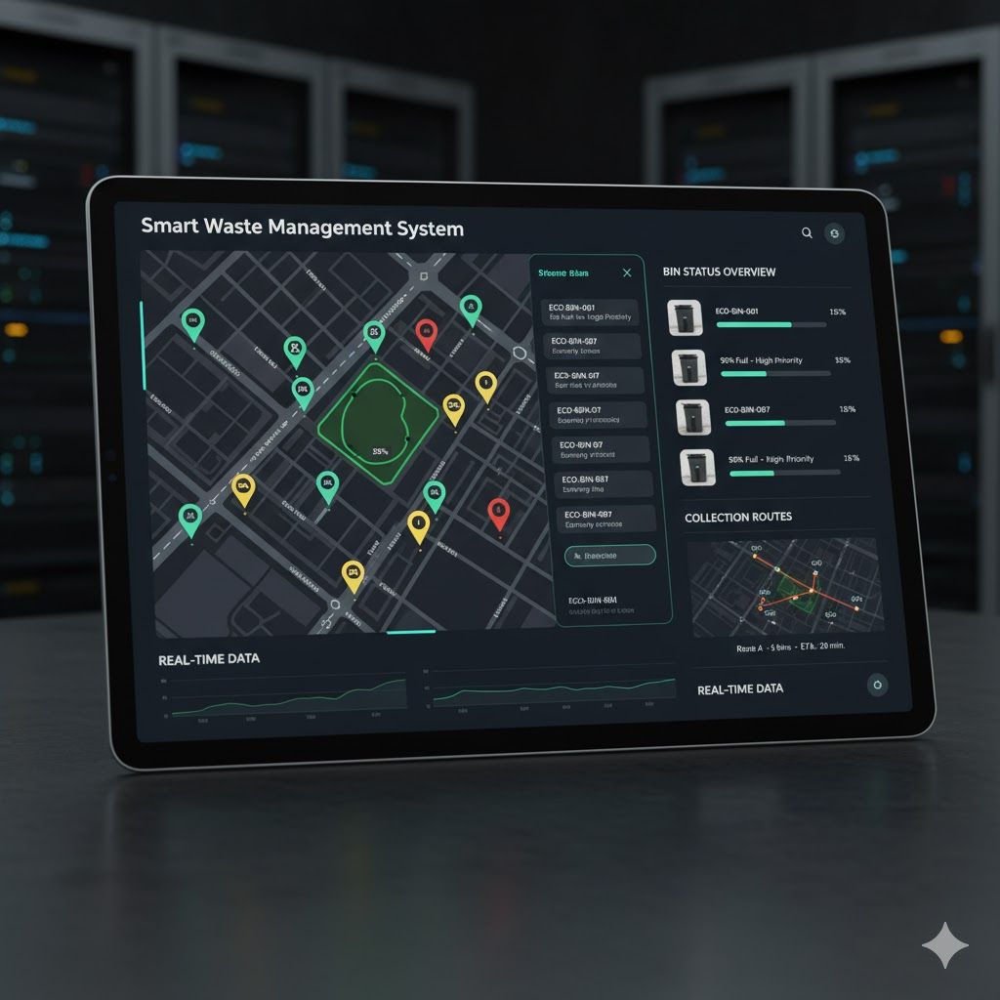

Smart Dustbin 🗑️
An intelligent waste management system with automatic lid operation, fill-level monitoring, and remote notifications.
Project Overview
The Smart Dustbin uses ultrasonic sensors for contactless lid operation, monitors waste fill level, and sends alerts to a central system via GSM. Designed for homes, offices, and public spaces, it forms a scalable Smart Waste Management System (SWMS) when connected to multiple bins.
Highlights 🌟
- 🗑️ Automatic Lid: Ultrasonic sensor detects hand movement to open/close the bin lid without touch.
- 📠Waste Level Monitoring: Measures fill level using ultrasonic or load sensors to prevent overflow.
- 📡 Remote Alerts: GSM module sends notifications when bins reach threshold levels.
- 🌠Multi-Bin Connectivity: Each bin communicates with a central system for efficient collection and route optimization.
- 📊 Dashboard: Mobile/Web dashboard visualizes all bins on a map, tracks collection history, and monitors health.
- 💡 Enhancements: Solar-powered, GPS-enabled location tracking, data encryption, and load verification after collection.
Project Gallery 📸



Code Repository 💻
View the complete source code for this project on GitHub: